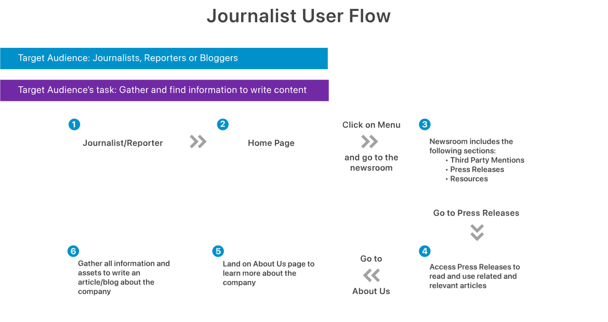
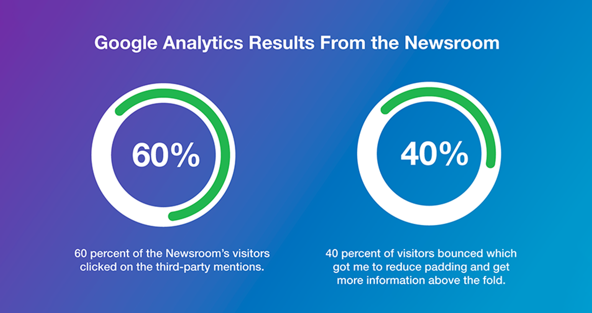
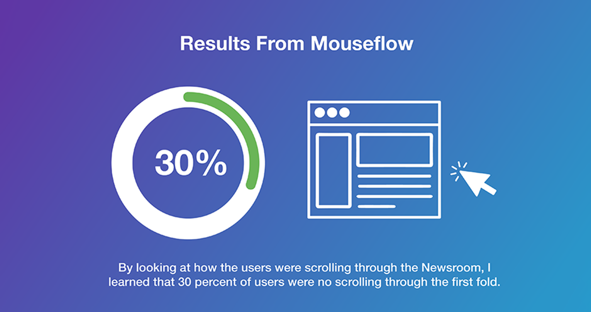
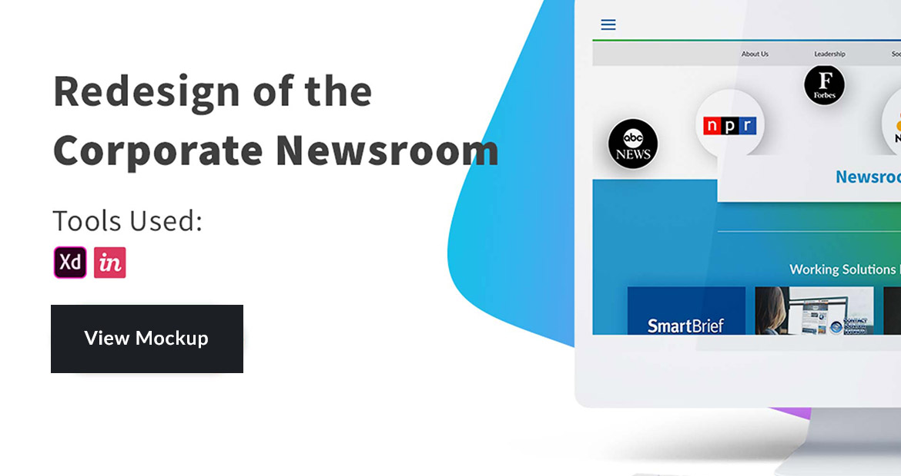

Redesigning the Newsroom

Project: Redesign of the Corporate Newsroom
Senior Visual Designer with expertise in UI/UX and digital design. Improved accessibility and user experience on the newsroom page of Working Solutions website. Addressed fundamental UI/UX issues by integrating it into the main navigation bar. Streamlined navigation to ensure easy access to essential resources for journalists. Enhanced digital public relations by optimizing the page's layout and functionality. Resulted in a positive first impression for the business.
1. Issues:
- Newsroom hard to find.
- Even harder to navigate.
- Not in the company’s rebrand.
2. New Approach:
Consider the users—journalists, harried and hungry for fingertip facts and figures. Think of history in a hurry. Our target audience: deadline-driven men and women, aged from cub reporters in their mid-20s to seasoned pros, from 30s on up. Working independently as freelancers or on staff for dynamic, digitized news organizations—the very definition of 24/7/365.
That said, the user-flow chart below shows how reporters or bloggers locate company information. When thinking about user flow, it was really important to facilitate finding data, making it easy go back and forth from one page to another without any interruptions. Today, we are considering a secondary menu to enable a more intuitive interaction within the website.

By looking at Google Analytics and Mouseflow, I was able to determine how the Newsroom was being used and what the user was looking for when landing on the web page. The data gathered from Google Analytics allowed me to learn that 60 percent of the visited areas in the Newsroom where third party mentions. Even though the page had a 40 percent bouncing rate, I was able to learn that the users were interesting on getting the validation from a third party about the company.

With mouse flow I was able to learn that 30 percent of the users were not scrolling through the Newsrooms first fold. I know I needed to get their attention, so I decided to reduce the padding and I tried using the color contrast to differentiate the section and entice users to click pass the first fold.

3. Wireframe
On the wireframe, needed to make the following information clear:
- Featured news
- Third-party mentions
- Press releases
- Media contact
- Social-media feed

Based on the specifications of the target audience, I decided to easy browsing is a must. Decided to add a secondary menu with relevant information to write about Working Solutions. View the wireframe on the inVision App.
- Featured news
- Third-party mentions
- Press releases
- Media contact
- Social-media feed
4. High-resolution mockup
This mockup clearly showcases the distinct sections, with modules designed for easy information retrieval, including organized links to resources presented in chronological order. This structure applies to various elements, such as third-party mentions and press releases.

Use XD link to have access to the high-fidelity mockup of the corporate newsroom and browse through the page.
View the high-fidelity mockup
Live Newsroom page